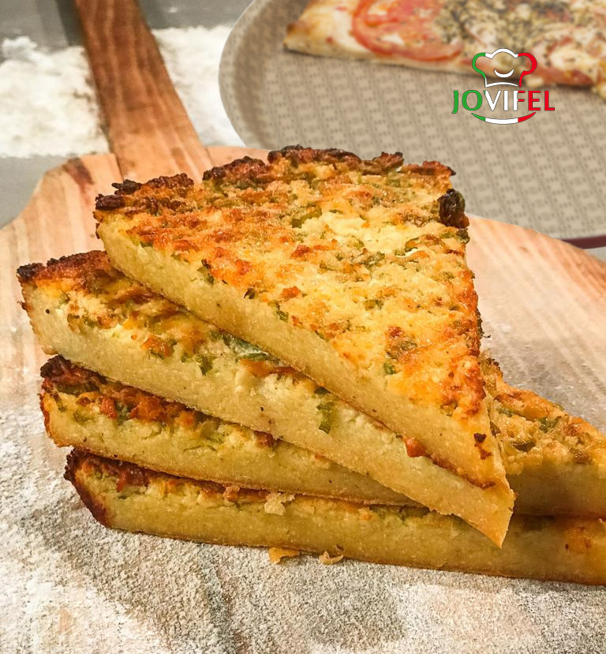

It is also known as chickpea flour pancake, a mouth-wateringly addictive
main course, side dish, snack...or pizza topping
One of the neatest things about fainá is that it's arguably more popular
in Argentina and Uruguay than it is in Genoa, Italy where it originated.
With just fresh-milled dried chickpeas, water, olive oil, salt and pepper,
fainá is both simple and delicious.
Ingredients
- 3 cups of water
- 150g of chickpea flour
- 3g of salt
- 3 Tbsp of olive oil
- ground black pepper
- Optional 2-3 grams sourdough starter
Steps
-
Double-mill the dried chickpeas, once very coarse and a second time
fine. You can also use store bought chickpea flour.
-
Mix in the water and the optional sourdough starter. Cover and let the
batter sit a minimum of 2 hours and ideally overnight.
-
After the rest, add the salt and pepper to the batter and mix
thoroughly.
-
Preheat your oven to 450F, with one shelf below the middle and another
shelf higher than the middle of your oven.
-
Put the olive oil into a cold 10-inch skillet, cast iron or stainless
steel, and heat it on the stove. Don't let the oil get to the point of
smoking. I have an infrared thermometer and found 360F worked well.
-
Add the batter to the skillet and let it cook until the edges curl in a
bit, 1-3 minutes.
-
Carefully transfer the skillet to the lower shelf of your hot oven.
-
Bake for about 25 minutes (10 minutes on the lower shelf and another
10-15 minutes on the higher shelf).
-
Use a metal spatula to separate the fainá from the base of the skillet;
then leave it in the skillet to cool for about 10 minutes.
-
Transfer to a cutting board and serve. Fainá reheats well in a toaster
oven or on a fry pan, but is also tasty cold.